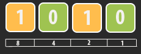

The Binary Game is a simple game wherein a player must convert a given decimal number to binary as fast as he/she can.
To play this game, one must have basic knowledge in addition. For example, the given decimal number is 10. Using the diagram below, the player should turn on (1) the values that would add up to 10 and turn off (0) the others:

In the figure shown above, 8+2=10. Hence, the answer should be 00001010.